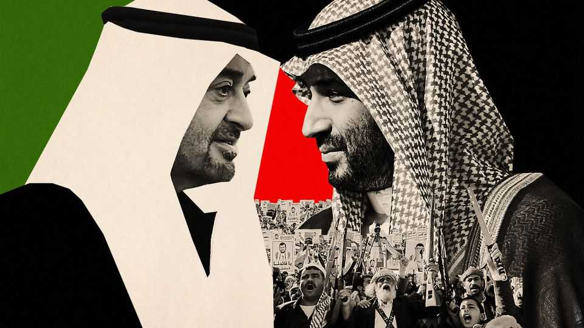

Saudi Arabia and the UAE are sowing chaos
Gulf powers should stop fuelling carnage in their backyard

Oct 22nd 2026
Saudi Arabia and the United Arab Emirates (UAE) could once pose as oases of stability. Now the two Gulf powers are under siege. A hostile Iran has a chokehold over the Strait of Hormuz, through which much of their commerce flows. The Houthis, an Iran-backed militia in Yemen, are lobbing missiles at Saudi airports and pipelines, disrupting trade and travel, and threatening Bab al-Mandab, another vital waterway. America, once the Gulf states’ most reliable ally, is now less willing to guarantee their security, leaving both countries exposed.
Given the scale of the crisis, you might think the Saudis and Emiratis would be marshalling their resources to deal with the problems close to home. Instead, they are tussling for influence farther afield, and recklessly inflaming some of the worst wars in the world.
The conflicts on either side of the Red Sea have complex causes. The Emiratis and Saudis did not start them, and are not the only foreign powers meddling, but they are making them bloodier and harder to end. This is clearest in Sudan, where a mass-raping genocidal militia, the Rapid Support Forces (RSF), is fighting the Sudanese army for control of the country. So vile are the RSF that they hunt down and kill doctors, since any doctor can testify to their crimes. Yet the Emiratis arm and support the RSF. (They deny it.) The Saudis back the somewhat less brutal regular army.
In Yemen, where both the Saudis and Emiratis have battled the Houthis, their squabbles have led to an Emirati pullback and allowed the Houthis, a regional menace, to fill the vacuum. The two Gulf states also vie for influence over ports on the Red Sea. Their competing alliances risk further aggravating tensions between Ethiopia and Eritrea, which are already close to (another) disastrous war.
Little of this makes sense. Granted, the ports of the Horn of Africa could be vital to regional trade, particularly as other routes are under threat. And as America becomes less dependable under President Donald Trump, it is reasonable for both Saudi Arabia and the UAE to develop networks of allies to bolster their own security. But not like this. The two Gulf states’ projections of power seem to owe more to the petulant rivalry between their respective rulers, Muhammad bin Salman and Muhammad bin Zayed, than to any thoughtful strategy. By arming combatants, failing to curb the laundering of war loot and making conflicts more complex, they are likely to prolong them.
The human cost is vast. The wars in Sudan and Yemen have claimed hundreds of thousands of lives, driven nearly 20m people from their homes and pushed millions to the brink of famine. That alone should be ample spur for the Gulf meddlers to change course.
Failing that, they should recognise that their foreign adventurism threatens their own interests. Chaos on either side of the Red Sea imperils trade routes even as the war with Iran buffets the Gulf economies. Also, it is hard to see how hastening the collapse of the gigantic African state in their backyard makes either Gulf power more secure. The barren UAE’s dream of using Sudan as a breadbasket is unlikely to be realised while gunmen are slaughtering Sudanese farmers.
So the Saudis and Emiratis should stop supporting the warring parties in Sudan, especially the RSF, and work together towards a ceasefire. In Yemen they should set aside their rivalry, collaborate to contain the Houthis and try to restore a ceasefire there, too.
More responsible, less incendiary foreign policies from Abu Dhabi and Riyadh would not suddenly make the region calm. But they might make its wars a bit easier to tamp down. And that would ultimately benefit nearly everyone, including the Saudis and Emiratis themselves. ■